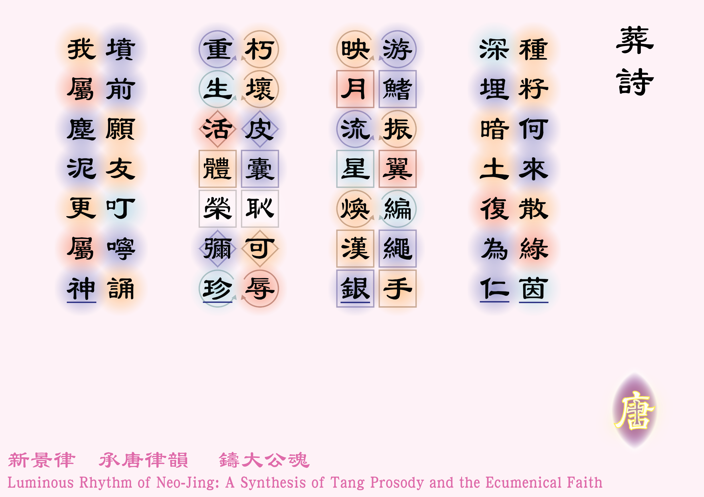
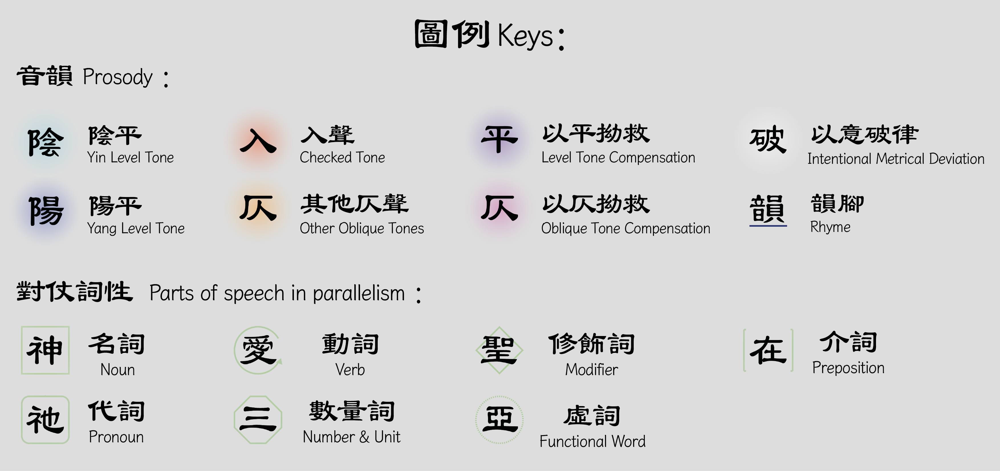

種籽何來散綠茵 ？深埋暗土復為仁 [1]* 見15:36；
** 仁：果實中的種籽。。
游鰭振翼編繩手 [2]見15:39。，映月流星煥漢銀 [3]* 見15:40-41；
** 煥：發光、照射；
*** 漢：銀河；
**** 銀：星體的光。。
朽壞皮囊恥可辱，重生活體榮彌珍 [4]* 見15:42-43；
** 彌：長久、更加的意思。
*** 此聯的「恥可辱」和「榮彌珍」，刻意破律，用了「三仄尾」和「三平尾」。，
墳前願友叮嚀誦，我屬塵泥更屬神 [5] 見15:44！
體裁：七言律詩（仄起首句入韻）
韻部：平水韻．十一真
創作日期：二零二六年六月六日
